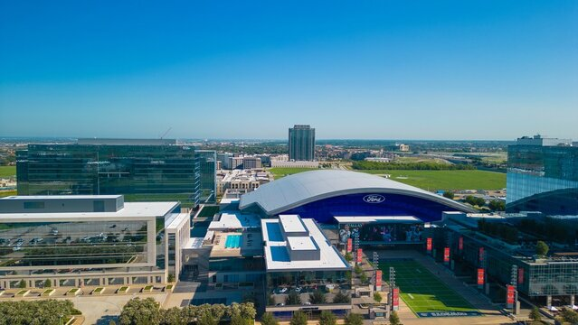

Frisco In Focus
A look at the events, progress, and people driving our community forward.
A quick look at what’s new, what’s exciting, and what’s making an impact.

The Frisco Turkey Day 5k is a Thanksgiving morning jog starting from the Old Frisco Community center. All ages are welcome to participate, and the event will follow a 5k route throughout Frisco. Participants are encouraged to bring food donations for the community. It is is an annual marathon that includes a 1-mile fun run, a 5k, and a 10k this is an annual tradition at Frisco for Thanksgiving and the slogan being “Run First, Eat later”.
Christmas in the Square is a free holiday light and music show in Frisco featuring over 180,000 synchronized lights displayed nightly from 6–10 PM. The event transforms Frisco Square into a festive winter setting with choreographed light displays and optional seasonal activities like ice skating at Skate the Square. Many music are specially choreographed just for this event.
Toyota Stadium hosts a variety of public events, including an upcoming Draw Watch Party on December 5 at 11:00 AM featuring food and drink specials, raffles, giveaways, and merchandise discounts. The venue also offers event space rentals and follows standard cashless parking and security policies.
Frisco Chamber of Commerce for an unforgettable evening of celebration and recognition at the Annual Awards Gala, hosted at the stunning Omni PGA Frisco Resort. With over 600 of Frisco’s top business leaders in attendance, this prestigious event is the perfect opportunity to celebrate success and foster new connections.
Kaleidoscope Park’s programs will be curated to engage audiences and genuinely represent the diverse and growing communities throughout North Texas. Kaleidoscope Park will present a variety of year-round activities including concerts, films, diverse musical and dance performances, and a variety of health and recreational activities. Kaleidoscope Park will focus on energetic and distinctive programming that will always be free and open to the public.